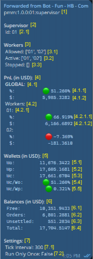

Fun Telegram Bot Documentation
This document is for the Funttastic Bot integrated on Telegram. The bot is capable of Market Making (MMing) using
Kujira’s network (testnet and mainnet) and Hummingbot Gateway (HB Gateway).
A tutorial on how to set up your own bot is available here.
A Supervisor is an entity responsible to supervise all workers configured, collecting statistics
globally.
The Worker is an entity to work in a specific market with a specific strategy.
Supervisor
The Supervisor is responsible for overseeing all configured workers, collecting statistics globally.
Here is the documentation explaining all aspects of the Supervisor’s summary on Telegram:

Supervisor
- 2. Supervisor
- 3. Workers
- 3.1. Allowed workers
- 3.2. Active workers
- 3.3. Stopped workers
- 4. Profit and Loss (in US Dollars)
- 4.1. Global or combined (from all workers) profit and loss
- 4.1.1. Global percentual profit and loss
- 4.1.2. Global profit and loss amount
- 4.2.1 Workers
- 4.2.1.1. Worker’s percentual profit and loss
- 4.2.1.2. Worker’s profit and loss amount
- 5. Wallets (in US Dollars)
- 5.1. Wallet initial value
- 5.2. Wallet previous value
- 5.3. Wallet current value
- 5.4. Percentual current to initial wallet value change
- 5.5. Percentual current to previous wallet value change
- 6. Balances (in US Dollars)
- 6.1. Total free/not used balance
- 6.2. Total balance amount locked in orders
- 6.3. Total unsettled balance amount (not free and not in orders)
- 6.4. Total balance (free + locked/orders + unsettled)
- 7. Settings
- 7.1. Amount of time the worker waits to run again
- 7.2. Defines if the worker has to run only once or not (true/false)
Worker
- 2. Worker
- 2.1. Worker’s ID
- 2.2. Network
- 2.3. Market
- 2.4. Wallet ID
- 3. Profit and Loss (in US Dollars)
- 3.1. Percentage
- 3.1. Amount
- 4. Balances (in US Dollars)
- 4.1. Total (base + quote)
- 4.1.1. Total free/not used balance
- 4.1.2. Total balance amount locked in orders
- 4.1.3. Total unsettled balance amount (not free and not in orders)
- 4.1.4. Total balance (free + locked/orders + unsettled)
- 4.2 Tokens
- 4.2.1. Base token of the current market
- 4.2.1.1. Current base token price
- 4.2.1.2. Base token free/not used balance
- 4.2.1.3. Base token balance locked in sell orders
- 4.2.1.4. Base token unsettled balance (not free and not in order)
- 4.2.1.5. Base token total balance
- 4.2.2. Quote token of the current market
- 4.2.2.1. Current quote token price
- 4.2.2.2. Current quote token free/not used balance
- 4.2.2.3. Current quote token balance locked in sell orders
- 4.2.2.4. Current quote unsettled token (not free and not in order)
- 4.2.2.5. Current quote token total balance
- 5. Wallet (in US Dollars)
- 5.1 Wallet initial value
- 5.1 Wallet previous value
- 5.1 Wallet current value
- 5.1 Percentual current to initial wallet value change
- 5.1 Percentual current to previous wallet value change
- 6. BASE (in QUOTE)
- 6.1. Base token initial price in quote token units
- 6.1. Base token previous price in quote token units
- 6.1. Base token current price in quote token units
- 6.1. Percentual current to initial base token price change
- 6.1. Percentual current to previous base token price change
- 7. Price
- 7.1. Price effectively used to place orders
- 7.1. Current price from the market or ticker (mainnet price)
- 8. Orders
- 8.1. Quantity
- 8.2. Quantity of new orders created in this round
- 8.3. Quantity of new orders canceled in this round
- 9. Fees
- 9.1. Name of the native token
- 9.2. Native token
- 9.2.1 Total amount of fees paid when creating orders
- 9.2.2 Total amount of fees paid when canceling orders
- 9.2.3 Total amount of fees paid while withdrawing or settling the balances
- 9.2.3.1 Native token total amount of fees paid while withdrawing
- 9.2.3.2 Base token total amount of fees paid while withdrawing
- 9.2.3.3 Quote token total amount of fees paid while withdrawing
- 9.2.4.Total amount of fees paid in general
- 9.3 US Dollars
- 9.3.1. Total amount of fees paid when creating orders
- 9.3.2. Total amount of fees paid when canceling orders
- 9.3.3. Total amount of fees paid while withdrawing or settling the balances
- 9.3.3.1. Native token total amount of fees paid, in USD, while withdrawing
- 9.3.3.2. Base token total amount of fees paid, in USD, while withdrawing
- 9.3.3.3. Quote token total amount of fees paid, in USD, while withdrawing
- 9.3.4. Total amount of fees paid in general
-
10. List of newly created orders
-
11. List of currently untracked orders
-
12. List of orders canceled
-
13. List of all filled orders
- 14. Settings
- 14.1. Amount of time the worker waits to run again
- 14.2. Type of the order (limit or market)
- 14.3. Strategy to define the current market price (middle, ticker, last fill)
- 14.4. Strategy to define the current market middle price (SAP, WAP, VWAP): SAP (simple average
price), WAP (weighted average price), VWAP (volume weighted average price)